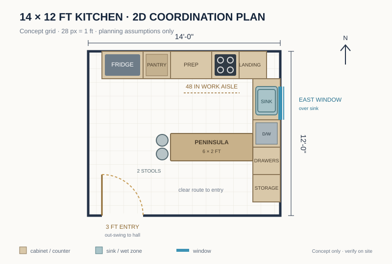
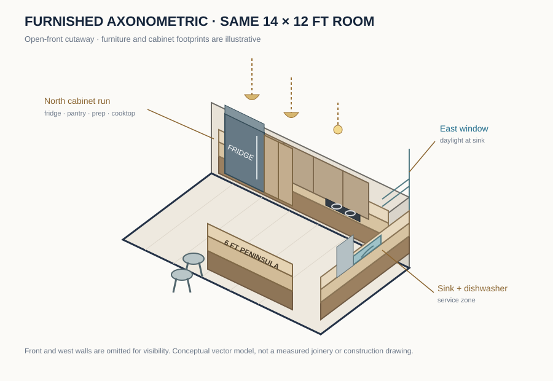
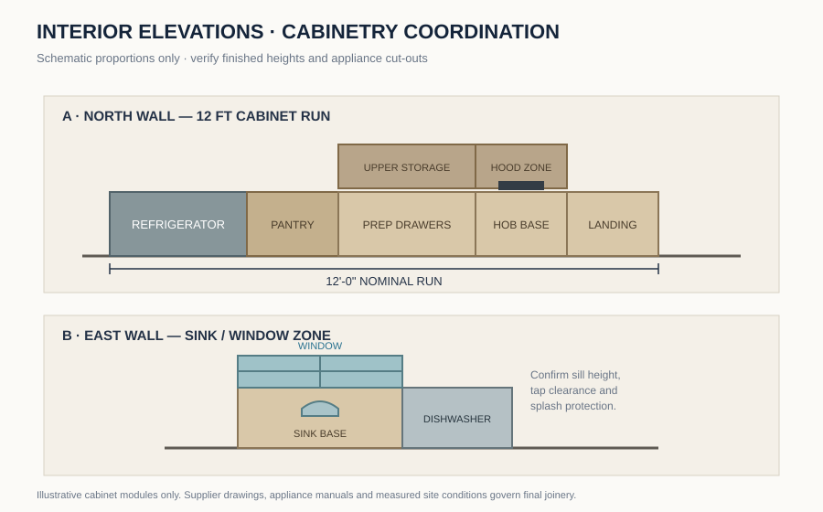
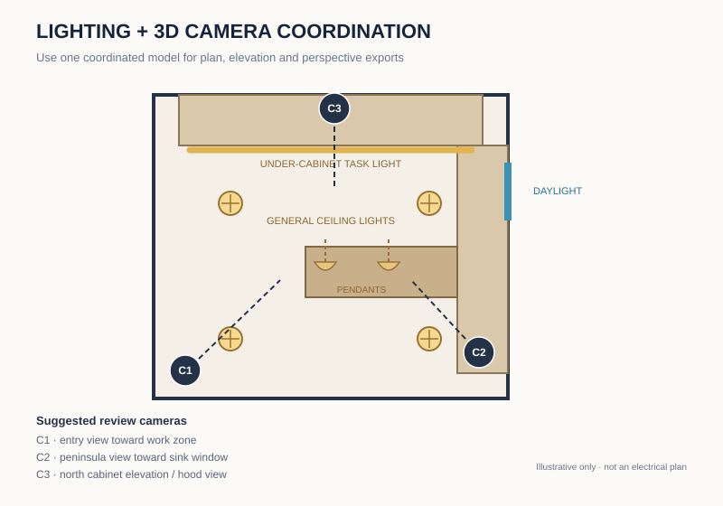

14 × 12-Foot L-Shaped Kitchen: A Coordinated 3D Design Study
Follow one practical kitchen concept from a dimensioned room layout to a furnished axonometric view, cabinet elevations, lighting coordination and a repeatable 3D-model review process.
A kitchen render is useful only when it represents a layout that can be checked. The sink, cooktop, refrigerator, doors, windows, work surfaces and lighting should occupy the same positions in the plan, elevations and 3D view. This study uses a 14 × 12 ft room to show how a compact L-shaped kitchen with a short peninsula can be documented as one coordinated design rather than several unrelated pictures.
Design status: The four figures on this page are original conceptual SVG diagrams. They are not measured site drawings, manufacturer shop drawings, photorealistic renders or photographs of a completed kitchen. The room dimensions and cabinet modules are illustrative assumptions. Confirm the actual room, wall build-ups, appliance models, service locations and applicable requirements before ordering or construction.
1. Design brief and room envelope
The assumed finished room is 14 ft wide east–west by 12 ft deep north–south, giving a nominal 168 sq ft planning area. The north wall carries the main cabinet run. A shorter cabinet run follows the east wall, with the sink placed below an east-facing window. A 6 × 2 ft peninsula projects from the east run into the room. The entry is on the south wall near the west corner and is shown opening outward to the adjoining space so that the door leaf does not occupy the main work zone.
The arrangement is intended for a household that wants a defined cooking area, a useful preparation surface and a small informal serving counter without placing a freestanding island in the centre. It assumes the room has no structural column in the work aisle and that the east wall can accommodate a window. If the actual room has a different door, window, plumbing stack or structural element, the model must be revised rather than forcing the furniture to fit.
2. Conceptual 2D kitchen plan

| Element | Concept size / position | Design purpose |
|---|---|---|
| Room envelope | 14 × 12 ft | Nominal finished room area of 168 sq ft before adjustment for wall finishes or built-ins. |
| North cabinet run | 12 ft long × 2 ft deep | Refrigerator, pantry, preparation zone, cooktop and landing surface. |
| East cabinet run | About 9 ft long × 2 ft deep | Sink, dishwasher and lower storage, subject to fixture selection. |
| Peninsula | 6 × 2 ft | Additional preparation and serving surface; it is not a structural wall. |
| Primary work aisle | Target shown: 48 in clear | Space between the north counter edge and peninsula for normal kitchen movement. |
| Entry | Nominal 3 ft opening on south wall | Connects to the adjoining hall; swing direction must be checked on site. |
| Sink window | East wall, centred above sink zone | Daylight and a view while washing; sill and opening type depend on tap and splashback. |
The 48 in aisle is a design target for this concept, not a universal legal minimum. Check the clear distance between finished counter faces, appliance handles and projecting hardware. A dishwasher, oven or refrigerator door can temporarily occupy the aisle when open, so the model should show operating positions as well as the closed furniture layout.
3. Reading the furnished 3D view

The axonometric view explains the plan in three dimensions. The refrigerator and pantry occupy the north-west end of the long run. A preparation zone sits between storage and cooking. The cooktop is on the north counter, with landing space on both sides where the selected appliance and cabinet sizes allow. The sink is on the east run below the window, and the dishwasher is adjacent so that rinsing and loading are close together.
Why use a peninsula instead of an island?
The peninsula is attached to the east counter, adding a serving edge while leaving the central floor visually open. It can help separate the work zone from the entry path. The two stools shown are placeholders only. Use the actual stool footprint and pull-back distance to test circulation; if seating narrows the route or blocks a cabinet, remove one stool or use the peninsula as a standing preparation surface.
Appliance operation matters in 3D
Model the refrigerator, oven, dishwasher and cabinet drawers in their open positions. A static render can hide a conflict that appears during use. Keep hot cooking surfaces away from the main entry path, provide suitable landing areas and confirm manufacturer ventilation and installation clearances. Use the exact appliance dimensions before cabinet fabrication.
4. Cabinet elevations and vertical proportions

Use the north elevation to coordinate the refrigerator, pantry, preparation counter, cooktop and hood. The hood position must match the cooktop in plan and the manufacturer's ducting or recirculation requirements. Avoid placing an upper cabinet where it conflicts with the hood, appliance opening or head space. The east elevation should coordinate the sink, tap, window sill, splash protection and dishwasher.
Before a cabinet maker prepares shop drawings, record the finished floor level, ceiling height, wall plumb, corner angles, service points, appliance model numbers and required filler panels. A room that appears square in a concept plan may not be square on site. Measure after the relevant wall and floor finishes have been established.
5. Lighting and camera planning

Separate lighting into layers. General ceiling lighting supports movement; task lighting should illuminate the preparation counter and sink without casting strong shadows; decorative pendants can identify the peninsula if they do not obstruct sightlines. Under-cabinet lighting is useful where upper cabinets shade the worktop. The east window adds daylight, but glare and heat gain should be assessed for the actual site orientation and climate.
The camera positions are suggested review views: an entry view toward the work zone, a peninsula view toward the sink window and a straight cabinet elevation. Save these positions in the 3D project so revisions can be compared consistently. Every perspective should come from the same approved model.
6. A reliable 2D-to-3D modelling sequence
- Measure the room: Record wall lengths, diagonals, ceiling height, finished floor level, door and window openings, columns, beams and service points. Photographs are useful references but do not replace measurements.
- Draw the 2D shell: Set the room envelope and wall thickness in a consistent unit system. Place openings from measured offsets.
- Add cabinet footprints: Draw the north and east runs, peninsula and fillers in plan. Label counter depth and clear aisle width.
- Insert real appliances: Use selected refrigerator, cooktop, oven, dishwasher and sink dimensions. Include door and drawer operating zones.
- Build vertical geometry: Add base cabinets, worktops, upper cabinets, window frames and hood. Match every elevation to the same plan coordinates.
- Apply materials: Assign a limited set of floor, cabinet, worktop, splashback and wall finishes using supplier samples where possible.
- Place lights and cameras: Create general, task and decorative light layers. Save the same camera angles used for review and presentation.
- Run a coordination check: Compare plan, elevations and 3D views side by side. Resolve mismatched openings, appliance collisions and service access before polishing the render.
7. Materials and design character
A calm, durable palette suits this compact kitchen. One option is warm off-white wall paint, natural oak-look or locally available timber-tone lower cabinets, muted neutral upper cabinets and a light, easy-clean worktop. A restrained splashback can connect the sink and cooktop zones without competing patterns. Select flooring for cleaning, wear and slip performance in the intended environment.
- Cabinet fronts: Compare locally available board, laminate, timber or other joinery systems for moisture resistance, edge protection, repairability and cost.
- Worktop: Select a surface appropriate for heat, stains, cleaning and the support details recommended by its supplier.
- Splashback: Use a cleanable finish compatible with the cooktop and sink area; follow product instructions for heat and moisture exposure.
- Floor: Review slip resistance, grout maintenance, transition heights and adjacent-room levels.
- Hardware: Choose hinges, runners and handles based on door weight, expected use and replacement availability.
- Window: Check frame durability, insect screening, rain protection, privacy and tap clearance.
8. Electrical, plumbing and ventilation coordination
Plan outlets around the actual appliance list and countertop use. Identify supplies for major appliances, small-appliance outlets, task-light connections, general lighting switches and any required hood supply. A qualified electrician must determine circuit protection, cable sizing, earthing, isolation and safe outlet positions under applicable local requirements. Keep electrical equipment appropriately separated from water and heat sources.
The sink and dishwasher are grouped on the east run, but exact water and waste connections depend on existing service routes, floor build-up and drainage conditions. Confirm hot and cold water, traps, shut-off valves, access panels, leak protection and maintenance access with a qualified plumber. The hood needs a suitable ventilation strategy; duct route, discharge location, make-up air and equipment clearances must be resolved for the selected product and local requirements.
9. Fit-out sequence from empty room to finished kitchen
- Confirm room dimensions, wall condition, floor level, openings and service locations.
- Approve the cabinet layout, appliance schedule, worktop specification and window details before ordering.
- Complete required wall, floor or ceiling preparation and verify concealed services before covering them.
- Have qualified trades install and test electrical, water, waste and ventilation provisions.
- Install cabinets level and securely to the substrate using the joinery supplier's details; do not assume a wall can carry a load without checking it.
- Template and fit the worktop after cabinets are fixed and actual walls are checked.
- Install the sink, tap, appliances, hood, splashback, lights and hardware to manufacturer instructions.
- Test appliance operation, water connections, drainage, ventilation, lighting and isolation-point access before use.
10. Approximate kitchen cost planning
No fixed price is stated because a 14 × 12 ft kitchen varies by country, town, supplier, material grade, appliance brand, labour, taxes and the condition of the existing room. Request dated local quotations for the same specification and separate supply costs from installation costs.
| Budget line | What to include |
|---|---|
| Preparation | Removal, repairs, levelling, wall preparation and waste disposal. |
| Cabinetry | Base and upper units, pantry, peninsula, fillers, hinges, runners and installation. |
| Worktops and splashback | Material, cut-outs, edge treatment, supports, delivery and fitting. |
| Appliances | Refrigerator, cooktop, oven, hood and dishwasher, including accessories. |
| Sink and plumbing | Sink, tap, traps, valves, pipe changes, waste connection and testing. |
| Electrical and lighting | Wiring changes, protection, outlets, switches, fixtures, task lighting and labour. |
| Floor and wall finishes | Tile or other finish, grout, paint, waterproofing where required and installation. |
| Contingency | An allowance agreed with the contractor for concealed conditions and changes. |
Record currency, location, quotation date, product model, quantity, tax treatment, delivery and installation exclusions beside each price. Moving a window, altering drainage or upgrading electrical capacity may cost more than changing a cabinet finish. An online sample price is not a quotation for this room.
11. Image briefs and accurate alt text
The four original SVG diagrams above are the visual assets included with this article. They explain the plan, cabinet volume, elevations and lighting/camera coordination. They are not photographs or photorealistic renders. If realistic imagery is commissioned later, use the same approved model and these briefs:
- Photorealistic axonometric prompt: Create an accurate open-front axonometric visualization of a 14 × 12 ft kitchen using the approved plan: a 12 ft north cabinet run with refrigerator, pantry, preparation counter and cooktop; an east counter with sink below the east window and adjacent dishwasher; and a 6 × 2 ft peninsula projecting from the east run. Preserve the 48 in main work aisle and south entry route. Use warm neutral cabinets, a pale worktop and restrained timber accents. Do not add an island, extra window or appliance absent from the plan.
- Eye-level interior prompt: Render the same kitchen from the south-west entry, looking toward the north cabinet run and east sink window. Show the peninsula at the right side, correct cabinet proportions, task lighting and realistic appliance sizes. Keep openings and joinery consistent with the plan and elevations.
- Cabinet elevation prompt: Show the north 12 ft cabinet run straight-on, including refrigerator, pantry, preparation drawers, cooktop, hood, landing counter and upper storage. Use the same material palette and do not hide functional clearances with decorative objects.
Alt-text rule: Figure 1 is a top-down 14 × 12 ft kitchen plan; Figure 2 is a cutaway axonometric vector diagram; Figure 3 is a pair of schematic cabinet elevations; Figure 4 is a lighting and camera coordination diagram. If later images show different furniture or finishes, revise the alt text to describe the actual image.
12. Limitations and professional review
This is a design-coordination example, not a construction or compliance document. It does not establish structural adequacy, wall-opening feasibility, electrical safety, plumbing falls, ventilation performance, fire safety, accessibility or legal compliance. It assumes the stated rectangular room and that the east window can be placed above the sink. A site with different dimensions, a structural column, low ceiling, different service stack or different household routine needs a revised layout.
Before purchasing appliances or fabricating cabinets, have the room measured and the layout reviewed by a qualified local designer or kitchen professional. Electrical, plumbing, ventilation, structural and regulatory decisions must be checked by appropriately qualified local professionals and authorities.
For related guidance, explore Kitchen Layouts, Interiors, 3D Designs, Room Layout Ideas, the 10 × 12 Bedroom Layout and the 26 × 34-Foot 3D Home Study.